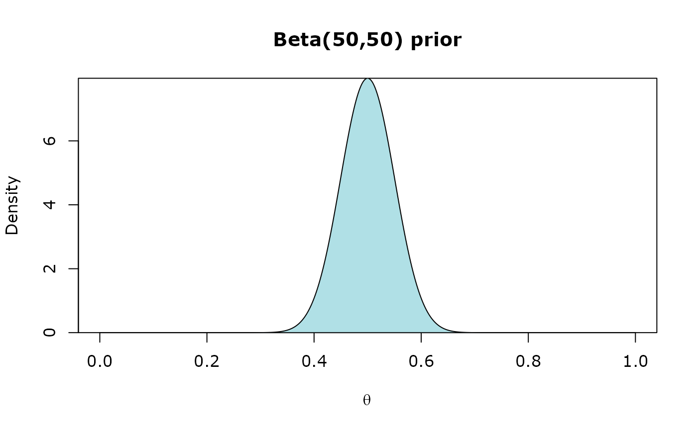
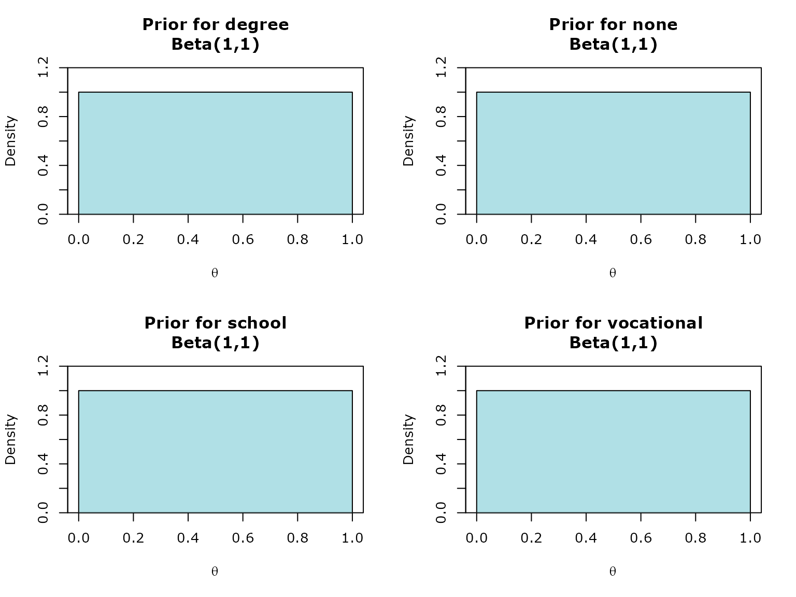
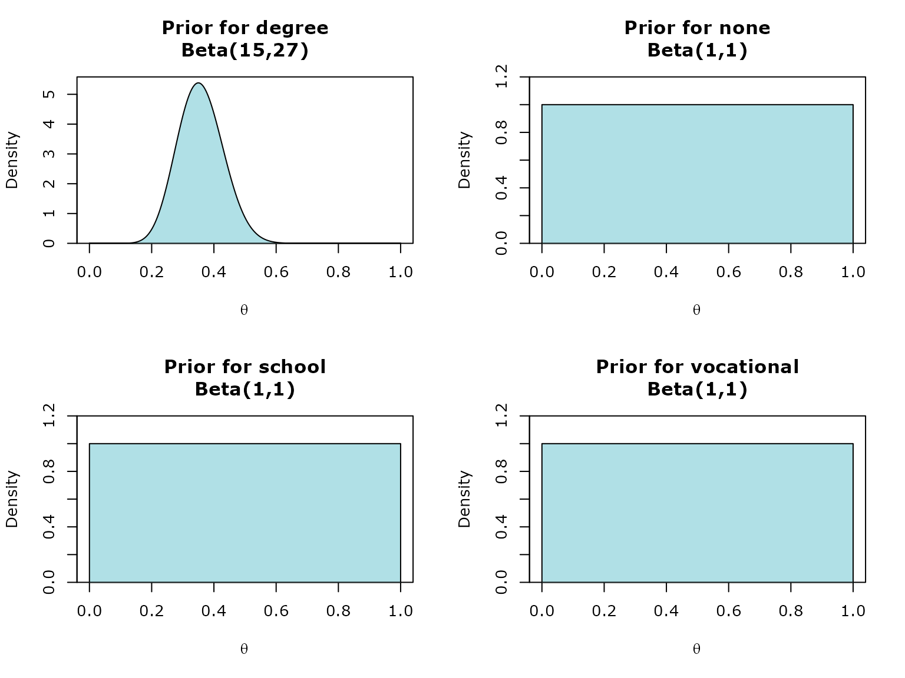

Conjugate Priors
Erena Tanabe, Tom Elliott, Matt Edwards
Source:vignettes/conjugate_priors.Rmd
conjugate_priors.RmdLikelihood functions: inz_lbinom, inz_lmulti, inz_lnorm
Prior functions: inz_dbeta, inz_ddir, inz_dNIG
Posterior calculation: calculate_posterior
Output: summary
To demonstrate how the functions work together, we will use the SURFIncomeSurvey_200 example dataset from iNZight.
library(iNZightBayes)
surf_data <- read.csv("surf.csv")
head(surf_data)## Personid Gender Qualification Age Hours Income Marital Ethnicity
## 1 1 female school 15 4 87 never European
## 2 2 female vocational 40 42 596 married European
## 3 3 male none 38 40 497 married Maori
## 4 4 female vocational 34 8 299 never European
## 5 5 female school 45 16 301 married European
## 6 6 male degree 45 50 1614 married EuropeanBeta-Binomial
This is the parameter estimation method for when the primary variable of interest is a two-level categorical variable. Supports single variable and two-variable (categorical/categorical) cases.
With this application we will use the ‘inz_lbinom’ and ‘inz_dbeta’ functions to construct our prior and likelihood object.
Univariate application
Gender variable
head(surf_data$Gender, n=10)## [1] "female" "female" "male" "female" "female" "male" "female" "male"
## [9] "female" "male"First, we construct our likelihood object from the data. This is the likelihood component of the Bayes’ Theorem, .
likelihood <- inz_lbinom(surf_data, Gender)With this variable, we would like to estimate the proportion of females (‘successes’) in the population, . Hence, we will also be inherently estimating the proportion of males (‘failures’), 1-, as well.
Next, we set up the prior, by passing the likelihood object into the prior function. This is the prior component of the Bayes’ Theorem . To start off, we will use an uninformative prior, Beta(1,1). This is the default prior set in the ‘inz_dbeta’ function.
prior <- inz_dbeta(likelihood)Beta(1,1) = Uniform(0,1). With this prior, we are essentially implying that we don’t have prior knowledge of (the proportion of females) in the population. Hence, all possible values of are assigned equal probability.
Finally, we pass the prior object which contains the likelihood and prior information into the calculate_posterior function. This function calculates the posterior parameters. This is the posterior component of the Bayes’ Theorem, .
posterior <- calculate_posterior(prior)This posterior object is used to obtain posterior estimates and credible interval values through summary function.
summary(posterior)## Estimated Proportions with 95% Credible Interval using a Beta(1,1) prior
##
## Estimate Lower Upper
## female 0.5347 0.4658 0.6029
## male 0.4653 0.3971 0.5342As we used an uninformative prior, the estimate of (and 1-) is very similar to the proportions seen in the data itself, which is 0.5350 (107/200) for females and 0.4650 (93/200) for males.
Changing the prior…
We have prior knowledge/belief that , the proportion of females in the population is around 0.5 (50%).
Let’s change the prior to an informative prior of Beta(50,50):
prior <- inz_dbeta(likelihood, alpha = 50, beta = 50)
Compared to the uninformative prior we used before, this prior assigns the highest probability to = 0.5. The probability gradually decreases for higher and lower values of (from 0.5).
posterior <- calculate_posterior(prior)
summary(posterior)## Estimated Proportions with 95% Credible Interval using a Beta(50,50) prior
##
## Estimate Lower Upper
## female 0.5233 0.4668 0.5796
## male 0.4767 0.4204 0.5332We can observe that the estimate of the proportion of females in the population, , has decreased to 0.5233 (52.33%) from 0.5347 (53.47%) using the informative prior.
Output settings
We can set the credible level of the credible interval
outputs. This is done using the cred_level
argument.
The default credible level is 95%.
If we want a 90% credible interval for our estimates,
cred_level=90:
posterior <- calculate_posterior(prior, cred_level=90)
summary(posterior)## Estimated Proportions with 90% Credible Interval using a Beta(50,50) prior
##
## Estimate Lower Upper
## female 0.5233 0.4759 0.5706
## male 0.4767 0.4294 0.5241We can also round the output values (in significant figures).
This is done using the signif_value argument.
The output below are rounded to 2 significant figures:
posterior <- calculate_posterior(prior, signif_value=2)
summary(posterior)## Estimated Proportions with 95% Credible Interval using a Beta(50,50) prior
##
## Estimate Lower Upper
## female 0.52 0.47 0.58
## male 0.48 0.42 0.53Bivariate application
Gender vs Qualification
The data:
likelihood <- inz_lbinom(surf_data, Gender, Qualification)With the two variables, we would like to estimate the proportion of females (‘successes’) (and hence, the proportion of males (‘failures’)) conditional on the groups in the secondary variable (Qualification).
In other words, we want to estimate the proportion of Gender for each group/level in Qualification.
The prior:
We will use Beta(1,1) prior (Uniform prior) for all groups:
prior <- inz_dbeta(likelihood)
The posterior:
posterior <- calculate_posterior(prior)
summary(posterior)## Prior
##
## degree Beta(1,1)
## none Beta(1,1)
## school Beta(1,1)
## vocational Beta(1,1)
##
##
## Estimated Proportions
##
## female male
## degree 0.4000 0.6000
## none 0.5610 0.4390
## school 0.5882 0.4118
## vocational 0.5217 0.4783
##
##
## 95% Credible Intervals
##
## female male
## degree 0.2352 0.4226
## 0.5774 0.7648
## none 0.4089 0.2926
## 0.7074 0.5911
## school 0.4700 0.2985
## 0.7015 0.5300
## vocational 0.4045 0.3622
## 0.6378 0.5955Changing the prior…
Let’s change the prior for degree group.
We have a prior belief that the proportion of females whose highest qualification is a degree is lower than males and is somewhere around 0.35.

posterior <- calculate_posterior(prior)
summary(posterior)## Prior
##
## degree Beta(15,27)
## none Beta(1,1)
## school Beta(1,1)
## vocational Beta(1,1)
##
##
## Estimated Proportions
##
## female male
## degree 0.3714 0.6286
## none 0.5610 0.4390
## school 0.5882 0.4118
## vocational 0.5217 0.4783
##
##
## 95% Credible Intervals
##
## female male
## degree 0.2629 0.5131
## 0.4869 0.7371
## none 0.4089 0.2926
## 0.7074 0.5911
## school 0.4700 0.2985
## 0.7015 0.5300
## vocational 0.4045 0.3622
## 0.6378 0.5955Dirichlet-Multinomial
This is the parameter estimation method for when the primary variable of interest is a multi-level categorical variable. Supports single variable and two-variable (categorical/categorical) cases.
With this application we will use the ‘inz_lmulti’ and ‘inz_ddir’ functions to construct our prior and likelihood object.
Univariate application
Qualification variable
head(surf_data$Qualification, n=10)## [1] "school" "vocational" "none" "vocational" "school"
## [6] "degree" "none" "degree" "vocational" "school"
likelihood <- inz_lmulti(surf_data, Qualification)
prior <- inz_ddir(likelihood)Using a Dirichlet(1,1,1,1) prior (Uniform)
The posterior:
posterior <- calculate_posterior(prior)
summary(posterior)## Estimated Proportions with 95% Credible Interval using a Dirichlet(1,1,1,1) prior
##
## Estimate Lower Upper
## degree 0.1422 0.09781 0.1931
## none 0.1961 0.14470 0.2531
## school 0.3284 0.26580 0.3942
## vocational 0.3333 0.27040 0.3993Using a differnt prior
The likelihood (data) remains the same
Let’s use the Jeffreys prior - Dirichlet(0.5,0.5,0.5,0.5):
prior <- inz_ddir(likelihood, alpha = rep(0.5, 4))
posterior <- calculate_posterior(prior)
summary(posterior)## Estimated Proportions with 95% Credible Interval using a Dirichlet(0.5,0.5,0.5,0.5) prior
##
## Estimate Lower Upper
## degree 0.1411 0.0967 0.1922
## none 0.1955 0.1440 0.2528
## school 0.3292 0.2662 0.3954
## vocational 0.3342 0.2709 0.4005Bivariate application
Qualification vs Gender
table(surf_data$Qualification, surf_data$Gender)##
## female male
## degree 11 17
## none 22 17
## school 39 27
## vocational 35 32
likelihood <- inz_lmulti(surf_data, Qualification, Gender)
prior <- inz_ddir(likelihood)
posterior <- calculate_posterior(prior)
summary(posterior)## Prior
##
## female Dirichlet (1,1,1,1)
## male Dirichlet (1,1,1,1)
##
##
## Estimated Proportions
##
## degree none school vocational
## female 0.1081 0.2072 0.3604 0.3243
## male 0.1856 0.1856 0.2887 0.3402
##
##
## 95% Credible Intervals
##
## degree none school vocational
## female 0.05765 0.1374 0.2740 0.2408
## 0.17190 0.2870 0.4515 0.4138
## male 0.11510 0.1151 0.2033 0.2498
## 0.26830 0.2683 0.3822 0.4369Qualification vs Ethnicity
likelihood <- inz_lmulti(surf_data, Qualification, Ethnicity)
prior <- inz_ddir(likelihood)
posterior <- calculate_posterior(prior)
summary(posterior)## Prior
##
## European Dirichlet (1,1,1,1)
## Maori Dirichlet (1,1,1,1)
## other Dirichlet (1,1,1,1)
## Pacific Dirichlet (1,1,1,1)
##
##
## Estimated Proportions
##
## degree none school vocational
## European 0.15620 0.19380 0.31880 0.33120
## Maori 0.10710 0.25000 0.39290 0.25000
## other 0.17650 0.11760 0.17650 0.52940
## Pacific 0.09091 0.27270 0.45450 0.18180
##
##
## 95% Credible Intervals
##
## degree none school vocational
## European 0.104400 0.13650 0.24900 0.26070
## 0.216200 0.25830 0.39280 0.40580
## Maori 0.023530 0.11110 0.22390 0.11110
## 0.242900 0.42260 0.57630 0.42260
## other 0.040470 0.01551 0.04047 0.29880
## 0.383500 0.30230 0.38350 0.75350
## Pacific 0.002529 0.06674 0.18710 0.02521
## 0.308500 0.55610 0.73760 0.44500Changing prior
prior <- inz_ddir(likelihood,
alpha = matrix(rep(0.5,16),
ncol=length(likelihood$levels))
)
posterior <- calculate_posterior(prior)
summary(posterior)## Prior
##
## European Dirichlet (0.5,0.5,0.5,0.5)
## Maori Dirichlet (0.5,0.5,0.5,0.5)
## other Dirichlet (0.5,0.5,0.5,0.5)
## Pacific Dirichlet (0.5,0.5,0.5,0.5)
##
##
## Estimated Proportions
##
## degree none school vocational
## European 0.15510 0.19300 0.31960 0.33230
## Maori 0.09615 0.25000 0.40380 0.25000
## other 0.16670 0.10000 0.16670 0.56670
## Pacific 0.05556 0.27780 0.50000 0.16670
##
##
## 95% Credible Intervals
##
## degree none school vocational
## European 1.031e-01 0.135500 0.24940 0.26120
## 2.153e-01 0.257900 0.39410 0.40740
## Maori 1.700e-02 0.106900 0.22750 0.10690
## 2.327e-01 0.429400 0.59420 0.42940
## other 3.092e-02 0.007819 0.03092 0.31940
## 3.849e-01 0.288400 0.38490 0.79710
## Pacific 5.949e-05 0.055970 0.19900 0.01384
## 2.622e-01 0.591600 0.80100 0.45370